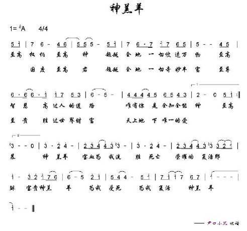
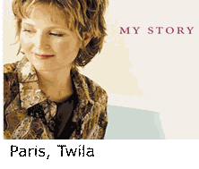
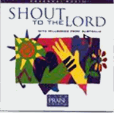

|
|
|
|
Verse 1 |
神的愛子，全然無瑕，奉神旨意，離開天庭， |
|

|
|
|
|
|
0952
Lamb of God
神的羔羊
He is
exalted, the King is exalted on high
Paris, Twila, 1958-
白麗絲
［詞，曲作者］


https://hymnary.org/person/Paris_T
白麗絲（Twila Paris, 1958 -
）的上三代都是專職的傳道人，父親是牧師也是鋼琴伴奏家，她得天獨厚的音樂天賦傳自父親。
白麗絲成長在這個宗教氣氛濃厚的家庭，少女時代，便在一個宣教士訓練學校進修，並在青年宣教的事工上服務了兩年，又赴國外宣教的地區，主領敬拜讚美及指揮詩班。
Texts by Twila Paris White (10)
Tunes by Twila Paris White (10)
Lamb of God
神的羔羊
詩歌賞析:
Lamb of God
神的羔羊
http://www.hymncompanions.org/Nov/16/stream.php
白麗絲（Twila Paris, 1958 -
）的上三代都是專職的傳道人，父親是牧師也是鋼琴伴奏家，她得天獨厚的音樂天賦傳自父親。
白麗絲成長在這個宗教氣氛濃厚的家庭，少女時代，便在一個宣教士訓練學校進修，並在青年宣教的事工上服務了兩年，又赴國外宣教的地區，主領敬拜讚美及指揮詩班。
1998
年十二月，白麗絲是以馬內利巡迴音樂會樂團中的一員，團員們休憩時，閑談起著名的福音歌唱家溫妮絲（Ce Ce
Winans）唱片�堥滬熔釧珔g知的「神的羔羊」作者是誰？白麗絲正巧走入，她告訴他們是她寫的，眾人難以置信。
於是她與他們分享寫作的經歷，告訴他們，有時一首歌的產生，並不是作者的潛心創作，而是神的賜予。
這首歌作於1980年，那時她尚未結婚，與父母同住。
她酷愛音樂，喜歡作曲，聆聽，修飾樂曲。
她已灌製了兩套唱片，每寫一首歌，如同完成一件精緻的手藝，那麼地令她振奮。
可是這首「神的羔羊」得來如有神助，她祗是輕鬆地把它記下而已。
完成後，她深愛此歌，難以置信這是她的作品。
她明白這不是她獨自完成的，雖然她在旋律上略加修飾，但絕大部份出于神。
這令她肅然起敬，能經歷與神一同創作，或我們來為祂創作。
她引用羅馬書11:36「因為萬有都是本於他，倚靠他，歸於他．願榮耀歸給他，直到永遠。阿們。」來表達自己的感受。
她的註釋是：「我們一切的天賦才能，要順服地用來歸榮耀給祂。
就如我寫一首敬拜讚美的詩歌，我安靜地坐在琴旁，神把這首歌當禮物送給我，我把它獻給祂的肢體，而他們把它獻回給主。
這是一個循環的屬靈交流。」
這首詩歌在1985年，錄入她的唱片，不久就被聖詩集採用，成為各國敬拜讚美詩歌中最受歡迎的詩歌之一。
這首詩歌使白麗絲名利雙收，並獲「聖鴿獎」，可是對她來講，最令她振奮的莫過於在世界另一個偏僻角落，聽到有一小群人用不同的言語在唱她的歌，那一剎時內心所獲得的滿足，難以形容。
她認為世上的榮華富貴祇是瞬間之事，能在一首流傳久遠的詩歌上有份，則是何等大的福份。
白麗絲說：「詩人和作曲家寫作許多詩歌，正如牧師也傳講許多信息；但最佳美的，乃是祗講耶穌。」